A Gesture Controlled Robot Hand
A journey into my madness of trying to make and control a robotic hand
Background
I have always been interested in how our hands work. It is insane to me that we can do anything from working in a construction site to performing brain surgery, all with the same hands. This interest is actually why I majored in Biomedical Engineering, I wanted to learn how the human body works and how we can use that understanding to improve people's lives. During my time at Johns Hopkins, I worked a lot on devices to understand how our hands felt things as well as how to improve hand function. I have posted some of these in my projects section. Unfortunately, there wasn't much of a career in prosthetics when I graduated, so I started working in my second field of interest: surgical robotics.
However, with the dawn of humanoid robotics and AI recently, I started thinking about robotic hands again. It seems like every one of these humanoid robots has some very dextrous hands and I decided to learn how they work by trying to make one of my own (to a much simpler degree of course). As for controlling it, I decided I wanted to map my own hand gestures to control the robot hand.
The Hand
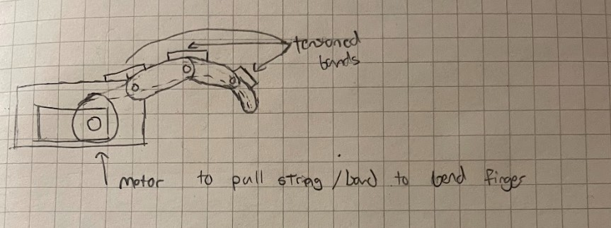
I decided to go with a tension driven mechanism for the fingers. This was to keep the fingers lighter and more compliant versus increasing the weight with motors on each joint. I also decided to make the fingers underactuated by having 1 motor per finger. This is because the fingers will then automatically conform to the object they are touching instead of needing to worry about extra control for each joint. The downside is that the hand won't have as many degrees of freedom as a human hand, but that is a tradeoff I was willing to make for a simpler design.
V1
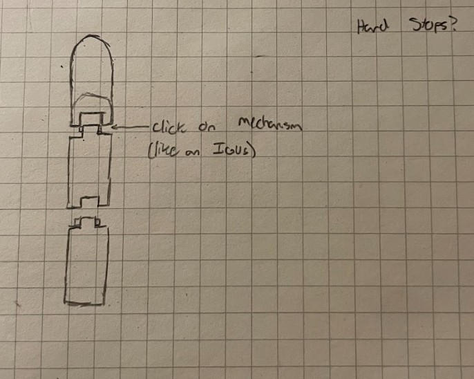
V1 started with the idea of linking the finger segments together using a snap-fit interlocking pin joint, similar to how an IGUS e-chain carrier works for its linkages. This was designed for an easy build since it didn't require any additional screws, pins, or fasteners.
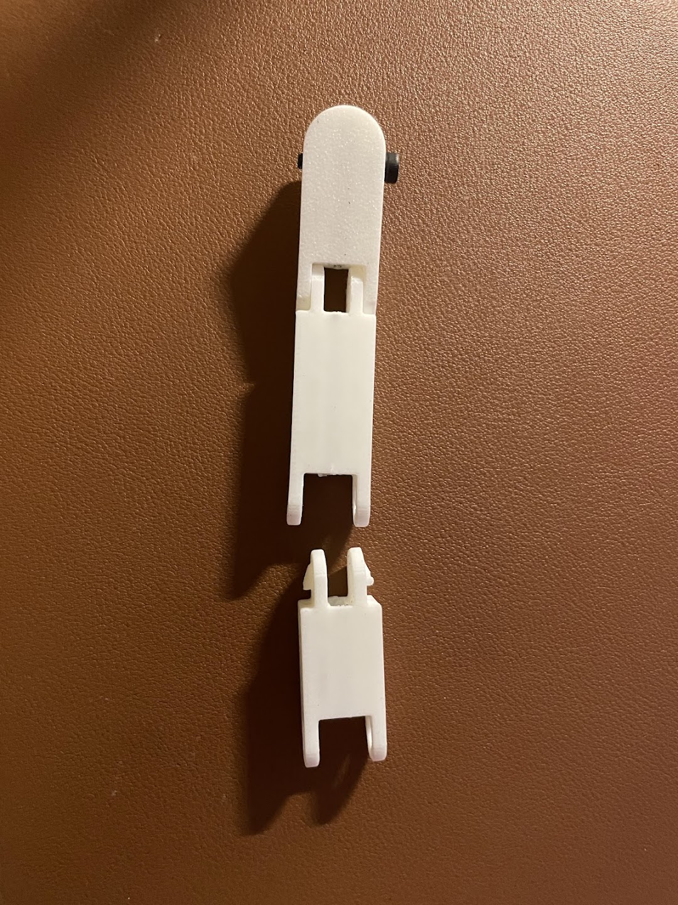
Unfortunately, this snap fit joint introduced a lot of friction to the system. The motor could barely move it and motion wasn't as smooth as I hoped. Also, pressing the linkages together sometimes led to the plastic cracking and/or snapping. The prints also would sometimes come out a little warped, so the mating features would not fit together well, leading to the joints being weak and harder to move.
V2
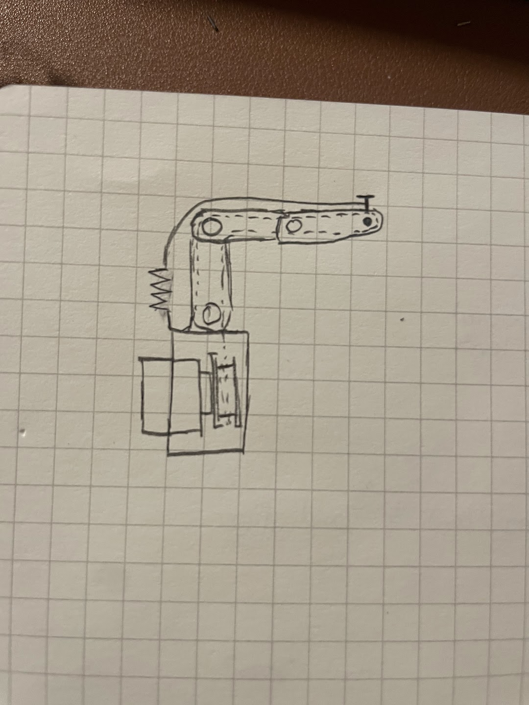
I went back to the drawing board for V2, purchasing some small bearings and pins for this iteration. Although working with small bearings can be tedious, a pack of 10 was inexpensive on Amazon. I replaced the snap-fit joint with holes designed to slot a 5mm dowel pin through and made cutouts to press-fit a small 8mm OD bearing.
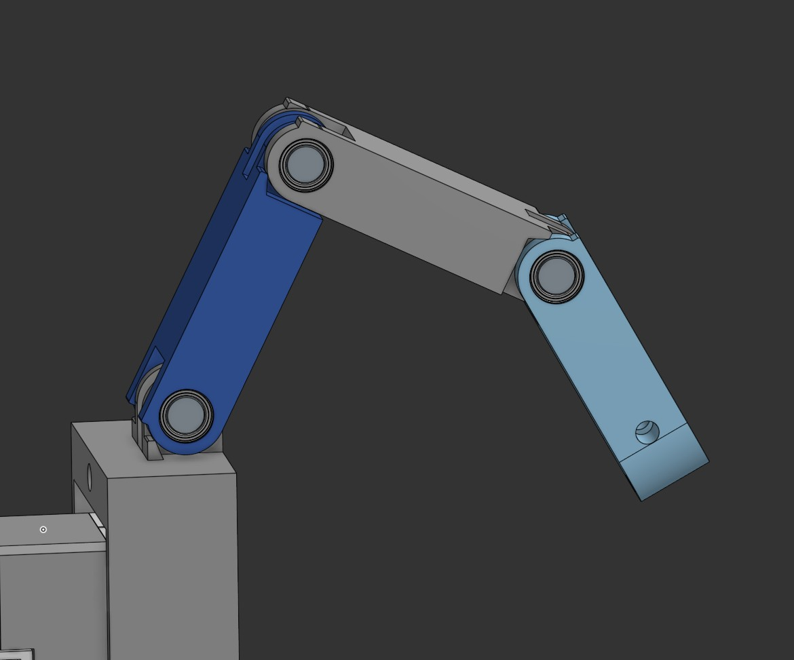
I also decided to add hardstops to this version, which were placed at each linkage point. This would allow the fingers to go back to their straight position when we add the spring tensioner. Speaking of which, I added two M3 through holes at the tips of the finger. One hole was for the driving mechanism, which would allow for the tendon to loop around it. When the tendon was pulled, this would allow for the finger to close. The other hole was another M3 through hole but this time, it was meant for the spring + tendon mechanism that would pull the fingers back to the open finger position. These all then attached to a mount with a Dynamixel XL330 servo with a spool attached to it.
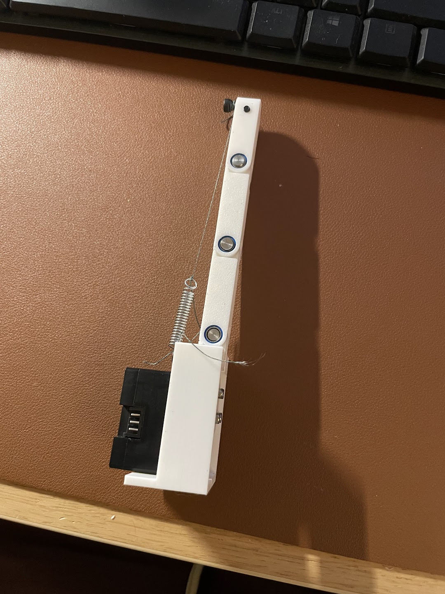
Almost immediately, the motion on this version felt smoother. Pressing the small bearings into their receptacles was a pain, but once I got the hang of it, it got better.
V3: The Whole Hand
Now it is time to start building out a whole hand! Using what I learned from V2, I strengthened the fingers a bit by making the center channels smaller, thereby adding more wall strength to each finger. I then designed a palm to connect all the fingers to and created the different finger sizes using Onshape's configuration tool. I also fleshed out the spools a little more so that they are easier to attach to the motors. There are some cutouts on the back of the hand so that the motor cables could be routed and interconnected. The motors had to be placed as they are to prevent any interference between cables for different fingers. There is a lot of open space in the palm so hopefully we can insert the RB-150 controller or power supply into this section.
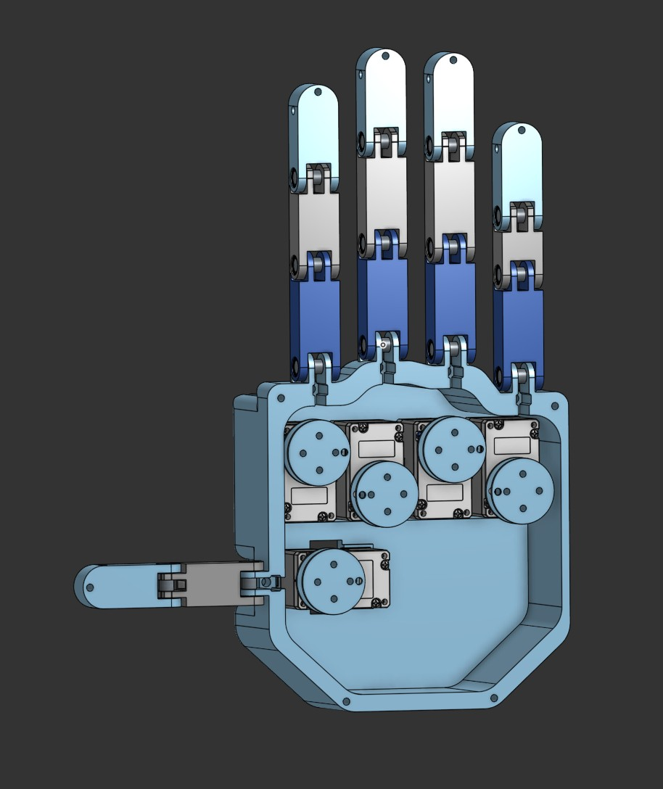
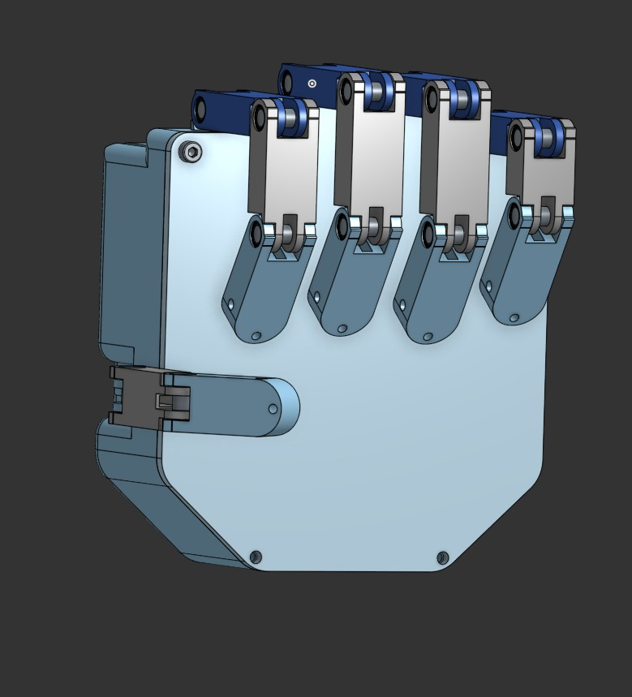
Printing these parts took a bit of effort. The fingers would usually need support material for printing them, which made post processing annoying but doable. I had to just use a drill and blade to clean up every print. Tensioning the springs was also a little annoying but I was able to loop the tendons around the screws in the tip of each finger. Tightening the screw would also pull on the spring and would then tension the spring.
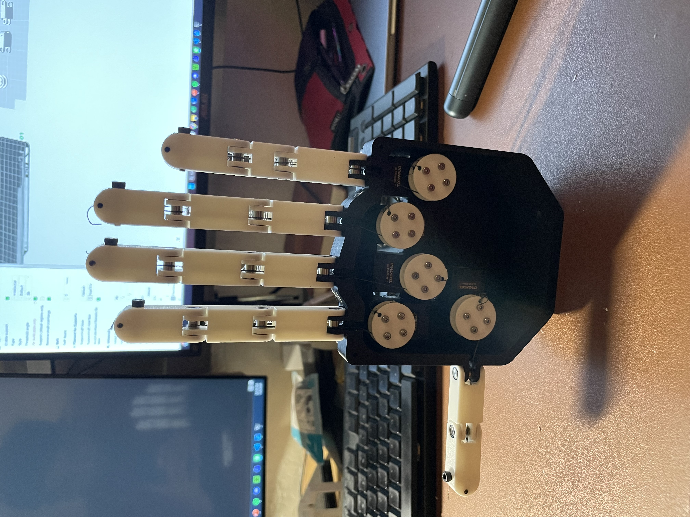
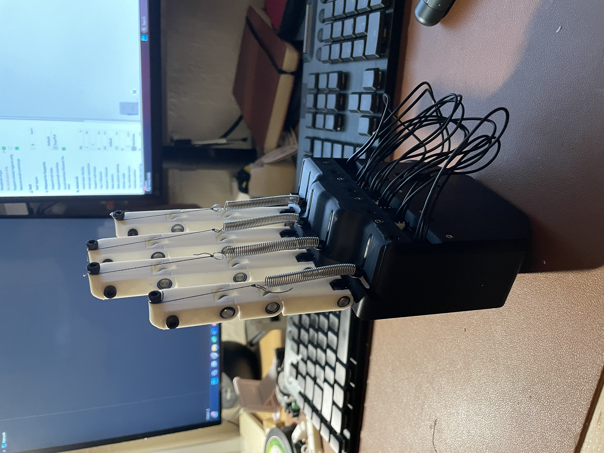
The Controller
Initial Idea: EMG sensors
I originally wanted to use a Myo armband that I had lying around to control the robot hand. In college, there was a lab where I got to control a virtual hand using the Myo and it was really cool! However, the Myo I owned had been collecting dust for too long, and when I tried to boot it up, the battery was dead and I was missing the USB dongle to wirelessly control it. To make things worse, I tried to take it apart as a final Hail Mary to see if I could replace the battery, but I ended up breaking the communication cable. Since the company has been defunct for some time, that was the end of my Myo band :(
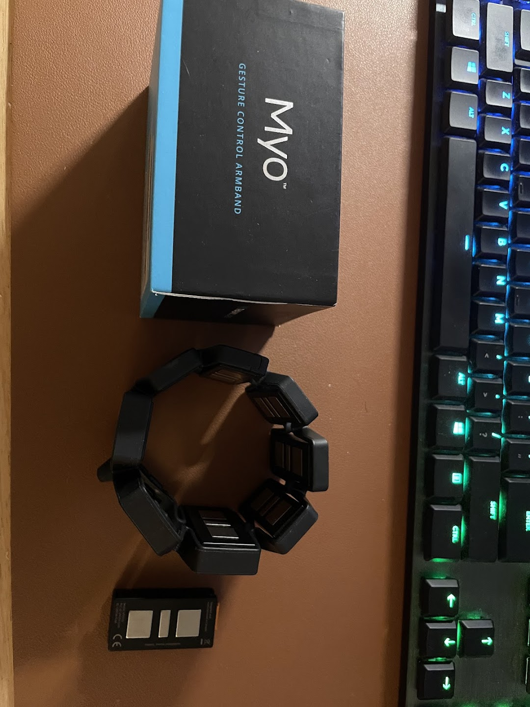
Pivot: Hand Gesture Tracking via Webcam
This led me to the idea of using gesture controls with a video camera. I've worked with OpenCV a bunch and I've seen how good hand models are at estimating hand and finger positions, so I thought it would be cool to use the camera to control the hand. I decided to go with Google's MediaPipe for the hand tracking because it was fairly lightweight and very responsive (around 15ms per frame).
I then wrote the software to handle the gesture tracking and also handle the robot control. The gesture tracking works by having an image capture and processing thread, image + hand overlay thread, and robot control thread. The image processing thread will take a frame using OpenCV's VideoCapture class and run the frame through the MediaPipe Hands model. The model will output a result that will be used by both the robot controller thread and the display function. The display function will use the results to overlay the hand connection points onto the hand in the video. The robot control code will also ingest the model results and will first calculate the angle between the tip of the finger and the knuckle of the finger. It does this by calculating the vectors from the wrist to the knuckle and the vector of the knuckle to the finger. Then you calculate the angle between the two using the dot product. This angle is then sent to the dynamixel which then converts the angle into a robot position and moves the finger.
Gesture Control on the Whole Hand
After getting V3 built, I needed to clean up the control code. In the single finger demo above,
I had the camera loop sending angle commands directly to the motor, which got messy fast.
Scaling up to a full 5 finger hand required a cleaner object oriented setup. I created
Finger objects to store min/max angles and motor data, and built conversion
functions to map the hand gesture angles from the camera straight into motor target positions.
Next came tendon slack and calibration. On startup, the strings are loose and the motors need to be homed. I wrote a simple auto tensioning routine that runs on boot: each motor drives until it hits a current threshold (stall limit) at the joint's hardstop. This automatically pulls the tendons taut while recording the calibrated min and max position limits for each finger.
To make finger movement much smoother and more responsive, I upgraded the motor communications
to use Dynamixel's GroupSyncRead and GroupSyncWrite commands. Instead
of messaging each motor sequentially, GroupSync lets me read and write data to all 5 motors in a
single batch call. I also split the software into two dedicated threads: one thread runs
MediaPipe tracking to process webcam frames and calculate finger target angles, while a separate
high frequency control thread continuously syncs target positions with the motors.
I also wanted the hand to yield if it met resistance so it wouldn't crush objects or snap tendons. To do this, I set the motors to Current based Position Control Mode. The motors will hold their target position until a set current limit is reached, at which point they safely yield to external forces. Once released, they spring right back to their commanded position, giving the hand a nice compliant grip!
There are still a few quirks to solve. The thumb doesn't move as much as I'd like (it has more complex degrees of freedom, and the camera sometimes loses track when fingers overlap). The pinky also needs some fine tuning. And as you can see below, if the hand closes too fast, the momentum will tip the whole thing over!
Code & Hardware Files
I have added all the code and hardware files needed to recreate this project on GitHub. If you also want to check out the CAD, I have also included the link to the Onshape part studio.